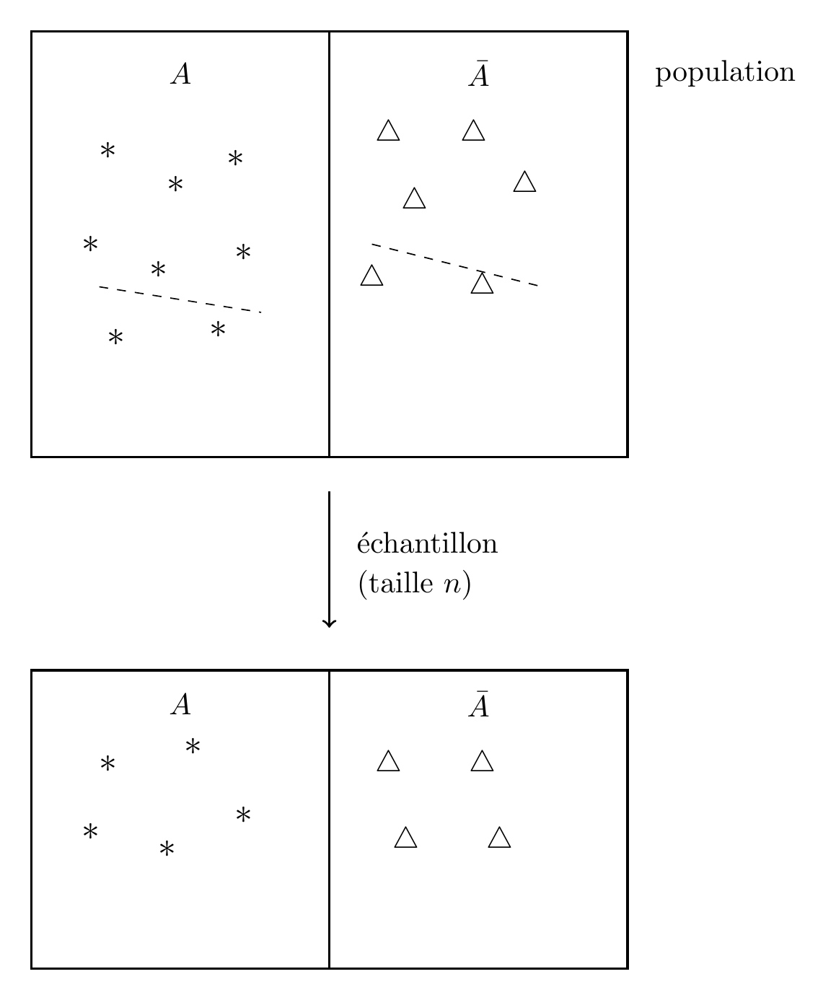
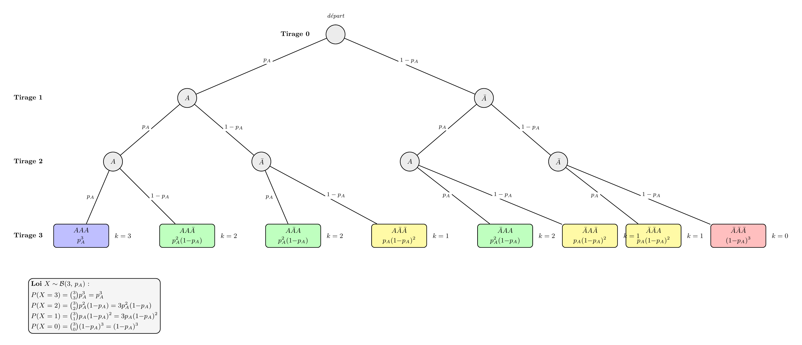
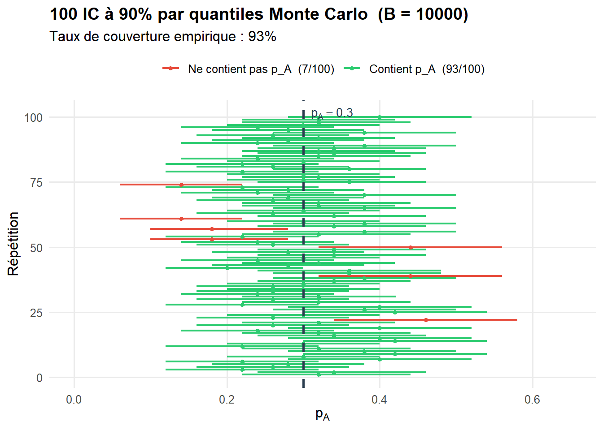
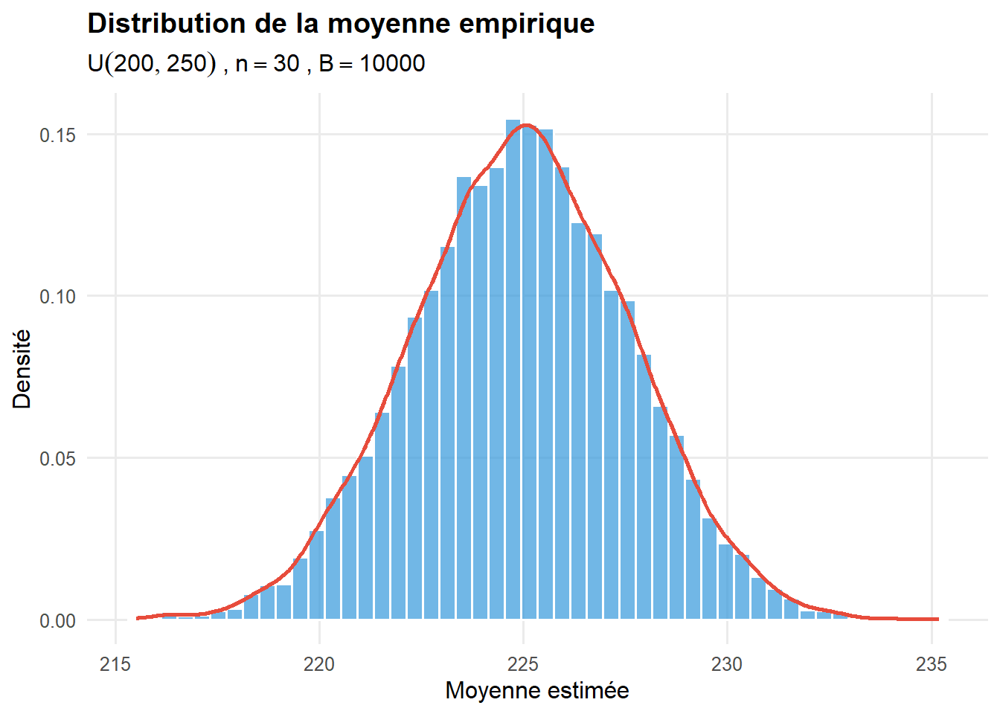

On prend un exemple simple : on veut estimer la proportion d’individu dans une population qui possède une caractéristique \(A\) (par exemple un phénotype donné). Pour chaque individu de la population il possède la caractéristique \(A\) ou ne la possède pas (\(\bar{A}\)). On note \(p_A\) la proportion recherchée.
La population totale n’est souvent pas observable, on tire un échantillon (en respectant un certain nombre de contraintes pour qu’il soit “représentatif”).

Et la proportion \(p_A\) est alors estimée par \[p_A\simeq\frac{n_A}{n}.\] Le problème est qu’à ce stade on ne connaît pas la précision de cette estimation.
On peut utiliser un procédé générique pour estimer \(p_A\)
ImportantPrincipe de Monte Carlo
On tire \(B\) (\(B=10000\) en général) échantillons de taille \(n\) dans la population en supposant connaitre le paramètre \(p_A\) et pour chacun de ces \(B\) échantillons on calcule la proportion d’individus possédant la caractérisque \(A\), on note \(\hat p^{(1)}_A,...\hat p^{(B)}_A\) les proportions obtenues.
Estimation de \(p_A\) : \(\hat p_A=\displaystyle{\frac{\hat p^{(1)}_A+...+\hat p^{(B)}_A}{B}}\).
Erreur d’estimation de \(p_A\) : \(\frac{1}{B-1} \sum\_{b=1}^B (\hat p^{(b)}_A-\hat p_A)^2\)
Le principe de Monte Carlo permet donc d’avoir une idée de l’estimation d’un paramètre
On va utiliser la loi binomiale \(\mathcal B(n,p_A)\)

Loi Binomiale pour \(n=3\)
Voir le code
pA <-0.3# proportion vraie (dans la vraie vie, inconnue)n <-10# taille d'échantillonB <-10000# nombre de simulations# B échantillons → B proportions estiméespA_est <-rbinom(B, size = n, prob = pA) / nmean(pA_est)
[1] 0.29843
Voir le code
var(pA_est)
[1] 0.02086262
Répéter plusieurs fois cette expérience vous constaterez que l’on n’obtient pas toujours les mêmes estimations et erreurs d’estimation… C’est la fluctuation d’échantillonage….
Intervalle de confiance (IC) d’une proportion :
Cette notion est difficile (car probabiliste). On va essayer de la comprendre sur des exemples. On va utiliser une autre technique de simulation appelée le bootstrap paramétrique :
ImportantPrincipe du bootstrap paramétrique
On tire \(B\) (\(B=10000\) en général) échantillons de taille \(n\) dans la population mais on ne connait pas le paramètre \(p_A\), donc il est estimé dans un premier temps. Ensuit le principe est le même : pour chacun de ces \(B\) échantillons on calcule la proportion d’individus possédant la caractérisque \(A\), on note \(\hat p^{(1)}_A,...\hat p^{(B)}_A\) les proportions obtenues.
Estimation de \(p_A\) : \(\hat p_A=\displaystyle{\frac{\hat p^{(1)}_A+...+\hat p^{(B)}_A}{B}}\).
Erreur d’estimation de \(p_A\) : \(\frac{1}{B-1} \sum\_{b=1}^B (\hat p^{(b)}_A-\hat p_A)^2\)
Monte Carlo vs Bootstrap paramétrique
Critère
Monte Carlo
Bootstrap paramétrique
On simule sous
la vraie loi (\(p_A\) connu)
la loi estimée (\(\hat{p}_A\) à la place de \(p_A\))
Usage
calcul théorique, calibration
inférence en pratique
Biais
aucun (si loi bien spécifiée)
biais d’estimation en \(\hat{p}_A - p_A\)
Hypothèse
forme et paramètre connus
forme connue, paramètre inconnu
Une estimation d’un \(IC\) à la confiance \(\alpha\) est donnée par : \[\widehat{IC}_\alpha=[\hat q_{\alpha/2},\hat q_{1-\alpha/2}]\] où \(\hat q\) est le quantile empirique estimé par boostrap paramétrique On va calculer le taux de couverture empirique qui est la proportion d’IC qui contiennent la vraie valeur du paramètre. Celui-ci doit être proche du taux nominal (c’est à dire \(1-\alpha\)).
Voir le code
set.seed(15)# --- Paramètres ---p_A <-0.3# vraie proportionn <-50# taille d'échantillonN_rep <-100# nombre de répétitionsB <-10000alpha <-0.1# --- Simulation ---resultats=data.frame(p_hat=rep(NA,N_rep),borne_inf=rep(NA,N_rep),borne_sup=rep(NA,N_rep))for(i in1:N_rep){ p_hat<-rbinom(1, size = n, prob = p_A) / n simu<-rbinom(B, size = n, prob = p_hat) / n ic<-quantile(simu,probs=c(alpha/2,1-alpha/2)) resultats$p_hat[i]<-p_hat resultats$borne_inf[i]<-ic[[1]] resultats$borne_sup[i]<-ic[[2]]}resultats$contient <- resultats$borne_inf <= p_A & p_A <= resultats$borne_supresultats$couleur <-ifelse(resultats$contient, "#2ecc71", "#e74c3c")resultats$rep<-1:N_reptaux <-mean(resultats$contient)cat("Taux de couverture :", round(taux *100, 1), "%\n")
Taux de couverture : 93 %
Voir le code
# Graphique library(ggplot2)ggplot(resultats, aes(y = rep, color = contient)) +geom_segment(aes(x = borne_inf, xend = borne_sup, yend = rep),linewidth =0.8) +geom_point(aes(x = p_hat), size =1.2) +geom_vline(xintercept = p_A, linetype ="dashed",color ="#2c3e50", linewidth =0.9) +annotate("text", x = p_A +0.01, y = N_rep +1.5,label =paste0("p[A]==", p_A),parse =TRUE, hjust =0, size =3.5, color ="#2c3e50") +scale_color_manual(values =c("TRUE"="#2ecc71", "FALSE"="#e74c3c"),labels =c("TRUE"=paste0("Contient p_A (", sum( resultats$contient), "/100)"),"FALSE"=paste0("Ne contient pas p_A (", sum(!resultats$contient), "/100)") ) ) +scale_x_continuous(limits =c(max(0, p_A -0.35), min(1, p_A +0.35))) +labs(x =expression(p[A]),y ="Répétition",color =NULL,title =paste0("100 IC à ",100*(1-alpha),"% par quantiles Monte Carlo (B = ", B, ")"),subtitle =paste0("Taux de couverture empirique : ", round(taux *100, 1), "%") ) +theme_minimal(base_size =12) +theme(legend.position ="top",panel.grid.minor =element_blank(),plot.title =element_text(face ="bold") )

Le taux de couverture dépend de \(n\), plus \(n\) est grand plus le taux de couverture empirique va être proche de la valeur nominale.
ImportantInterprétation du niveau de confiance d’un IC
Si on répète l’expérience un grand nombre de fois, environ 90% des IC obtenus contiendront \(p_A\) (c’est ce qu’on voit sur l’illustration précédente).
Pour un IC donné on ne sait pas si il contient ou pas la vraie valeur \(p_A\) !!!! Si on n’a pas de chance on aura obtenu l’un des 7 intervalles qui ne le contient pas.
NoteExercice 1
Reprendre le code du bootstrap paramétrique en fixant \(Nrep=5000,B=5000,\alpha=0.05\).
Calculer le taux de converture empirique en considérant :
\(n=10,100,200\) et \(p_A=0.3\). Que constate t’on ?
\(n=100\) et \(p_A=0.1,0.05,0.01\). Que constate t’on ?
Estimation de la moyenne d’une population
On considère une population de rats de souche Whistar Kyoto. On voudrait estimer le poids moyen de cette population. On n’a pas d’idée sur la distribution des poids donc on commence par considérer que le poids est distribué uniformément entre 200g et 250g.
On fait alors des simulations selon la méthode de Monte Carlo en supposant que l’on a des échantillons de \(n=30\) rats.
Voir le code
set.seed(3344)n <-30# taille d'échantillonB <-10000# nombre de simulationsm<-200M<-250moy_est<-rep(NA,B)# B échantillons → B proportions estiméesfor(b in1:B){moy_est[b]<-mean(runif(n,min=m,max=M))}ggplot(data.frame(moy_est), aes(x = moy_est)) +geom_histogram(aes(y =after_stat(density)),bins =50,fill ="#3498db", color ="white", alpha =0.7) +geom_density(color ="#e74c3c", linewidth =1) +labs(x ="Moyenne estimée",y ="Densité",title ="Distribution de la moyenne empirique",subtitle =bquote(U(200, 250) ~","~ n == .(n) ~","~ B == .(B)) ) +theme_minimal(base_size =12) +theme(plot.title =element_text(face ="bold"),panel.grid.minor =element_blank() )

Ceci illustre un théorème fondamental de mathématiques (Théorème central limite)
ImportantThéorème Central Limite
On considère une variable \(X\) de moyenne \(\mu\) et d’écart type \(\sigma\). On note \(\bar X_n\) la moyenne d’un échantillon de taille \(n\). Lorsque \(n\to \infty\)
Reprenons l’exemple précédent on a supposé que le poids suivait une loi uniforme \(\mathcal U[m,M]\). La moyenne de cette loi est \(\mu=\frac{m+M}{2}=225\) et l’écart type est \(\sigma=\frac{M-m}{\sqrt 12}=14.43\).